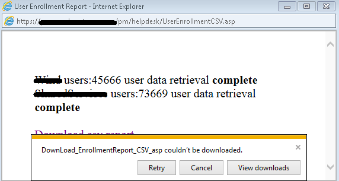
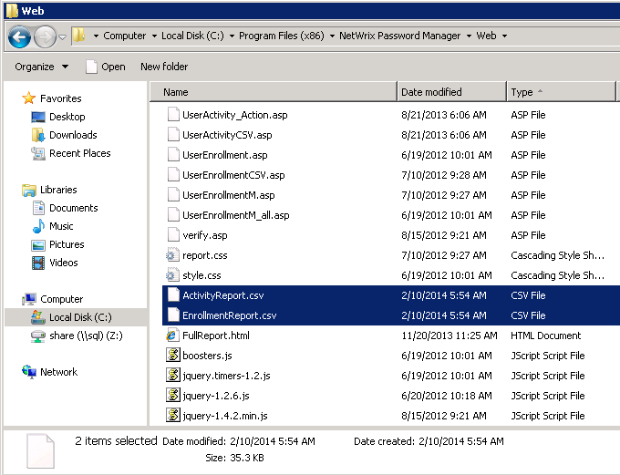
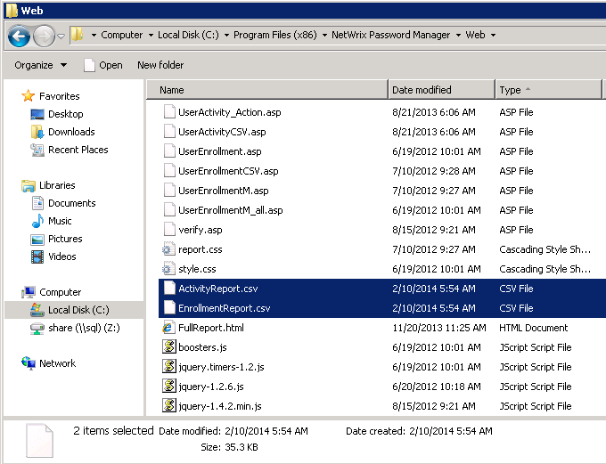
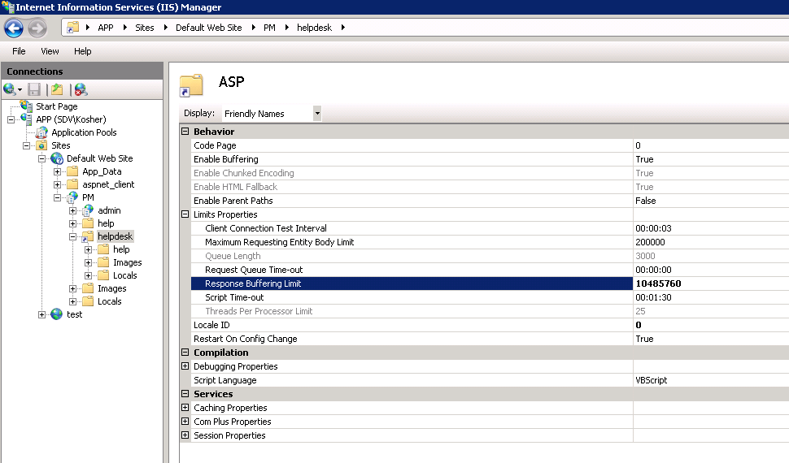

While downloading a report from Password Manager Helpdesk portal, no error messages are
displayed but the report can not be downloaded.

Reports are actually generated as html files. To make them available for download, Password Manager saves them in .csv format in the Helpdesk physical path folder (by default C:Program Files (x86)Netwrix Password ManagerWeb)  If the time period (for the Activity Report) or Number of users in monitored domains are large, then report files might be several megabytes in size. By default Internet Information Services has a 4 MB size limit for downloaded files, if the file is bigger than 4 MB, the error above might occur.
To resolve the issue you need to increase size limit. In order to do it:
Reports are actually generated as html files. To make them available for download, Password Manager saves them in .csv format in the Helpdesk physical path folder (by default C:Program Files (x86)Netwrix Password ManagerWeb)  If the time period (for the Activity Report) or Number of users in monitored domains are large, then report files might be several megabytes in size. By default Internet Information Services has a 4 MB size limit for downloaded files, if the file is bigger than 4 MB, the error above might occur.
To resolve the issue you need to increase size limit. In order to do it:
- Launch IIS manager
- In the left pane navigate to %Servername% - Sites - %PMWebsite% - %PMvirtualdir% - %Helpdeskvirtualdir%. By default it is %Servername% - Sites - Default Web Site - PM - Helpdesk
- In the central pane double click ASP feature under IIS group
- Expand Limit properties
- Change Response Buffering Limit to 10485760 (10 MB) or more
- Click Apply under Actions at the top of the right pane

If the above does not help, try restarting IIS with the iisreset command after
making the changes.